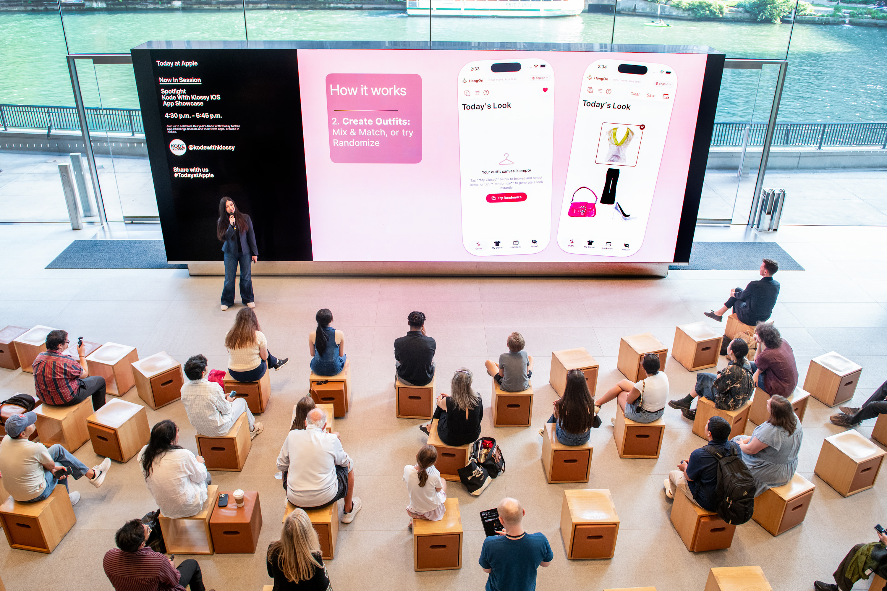

This summer has definitely been one for the books. I always try to make my summers better than the last; whether that's enjoying the sun with friends, setting more time aside for my hobbies, or finding new ways to intersect my personal interests with career development. This year, I got to do all three.
The most memorable part of this summer, though, was traveling to Chicago and presenting at the Apple Store on Michigan Avenue with Kode with Klossy. But getting there was its own story: one that started with a childhood movie, a coding camp, and a mobile app I built in Swift.
HangOn: From Clueless Inspo to a Sustainability Mobile App

Cher's virtual closet in the classic Y2K film Clueless probably left an imprint on every fashion-obsessed person's mind. When I first started learning how to code, I knew I wanted to make my own version of it: something to actually manage my very abundant closet. In college, I built a prototype web app version for a class project. This year, I revisited the idea and rebuilt it as a full web app on my own time.
Then an email came in from my Kode With Klossy alumni program about a mobile app challenge. I knew this was my opportunity to finally implement this idea in its mobile app version. I submitted HangOn—a digital closet and sustainability app—and got chosen as a finalist to present at the Apple Store in Chicago.
Building it in Swift was a full-circle moment. Swift was actually one of the first coding languages I was ever introduced to, back at my very first Kode With Klossy camp. Coming back to it years later, this time building a full iOS app entirely on my own, felt like tangible proof of how far I've come since that first summer I learned what software development was. Beyond just being a closet organizer, I built HangOn with a sustainability lens: helping people be more intentional about what they own, what they wear, and what they don't need to buy new.


Getting selected as a finalist and flying out to present in front of an audience at one of the coolest Apple stores in the country? Genuinely surreal. I kept thinking about the version of me who was just learning to print "Hello World." She would be shrieking and jumping up and down in happiness with me.
Chicago as a Whole
Among my extended Kode with Klossy family, Apple mentors, and Apple customers, I had my own little support system to cheer me on: my boyyyyfriendddd. He's always talked to me about Chicago and how its his favorite city. Now I can see why. I experienced the "Midwest" (or bits of it) for the first time, and between the architecture, the food, the people, and yes, even a tornado, I left completely charmed.
Full disclosure: I was pretty sick for the first part of the trip, which meant our itinerary shifted a bit to fit in daily naps. And yet, even sick, even exhausted, even through a literal tornado warning: I had the time of my life.
Mexican-Indian Fusion for Brunch: Mirra
We landed at 5am, (tried to) early check-in to our hotel, but had to wait for late morning to come around for our brunch reservation. We hadn't really planned to visit the Bean, but in a sleepy haze I suggested we take advantage of the early morning and time we had to kill to go see it. Soooo, our first stop: the Bean, obviously. We got to have a nice morning stroll and the Bean/Millenium Park wasn't as crowded as it would be by the afternoon.

By mid-morning our reservation at Mirra, an Indian-Mexican fusion restaurant, finally came around. This brunch. I still think about. Brunch is already my favorite meal, but Indian-Mexican brunch? Life-changing. We shared chilaquiles and french toast that had a perfect mix of the spices and ingredients we each grew up on. Each bite was perfect—and extremely filling.
More Food: Il Porcellino and Sifr


Chicago just had the best food ever. The morning we slept in, we ordered from Moka & Co, a Yemeni cafe with the yummiest pistachio croissant and other treats that absolutely did not disappoint. With that boost of fuel, we headed over to Wicker Park: indie bookshops, cute storefronts, people just living their lives. We went to a Barnes & Noble inside an old bank building which made my bookworm self fantasize about one day having an in-home library as eye-capturing as it was. We ended the day with Italian dinner and r&b-soul-jazz music at Il Porcellino, which was the perfect cap to a very good Monday.


The day of my Apple presentation, we celebrated after with dinner at Sifr and then an architecture boat tour with Wendella at night. Seeing Chicago's skyline from the river, lit up after dark, felt like the perfect way to close out the biggest day of the trip. We ended up on the Godfrey rooftop with wine, and I think I processed everything that had just happened somewhere between the first and second glass.

From Apple to the Big Apple
After Chicago, I flew to New York to visit one of my college best friends, Shannon. Shannon is probably one of the best itinerary curators I know. She genuinely knows how to take care of her people, and as my NYC host she did not disappoint.
I landed, took the train to her place, and she had already made dinner for me. We caught up on her rooftop with city views stretching out in every direction: I still can't believe her daily views of the skyline.


The next morning, I went to the MET and got to explore wings I hadn't made it to on my last visit. I did some solo shopping before we met up with her friends for drinks and dinner that night. And then, the highlight I didn't know I needed: $30 blowouts in Chinatown with a much needed neck massage included. We played dress-up, ran around the city, did some blind box shopping, and went out with the girls. Pure, unfiltered fun I'm always certain to have with Shannon.
There's something about visiting a best friend in their city. You get to see how they live, meet the people who are part of their everyday life, and feel what it would be like to exist in their world for a little while. Shannon's world is a good one.
All in All
I came home from these trips with a full heart and a clearer sense of direction. Presenting HangOn at Apple reminded me why I fell in love with building things; and that the ideas I've carried since the beginning of my coding journey are worth seeing through. Traveling with people I love, eating food I'd never tried before, navigating a cold and a packed presentation schedule in the same week confirmed that I love experiencing life in my twenties. Hitting career milestones and actually getting to enjoy the ride at the same time? I'll take it every time.
I can't wait to see what next summer brings.